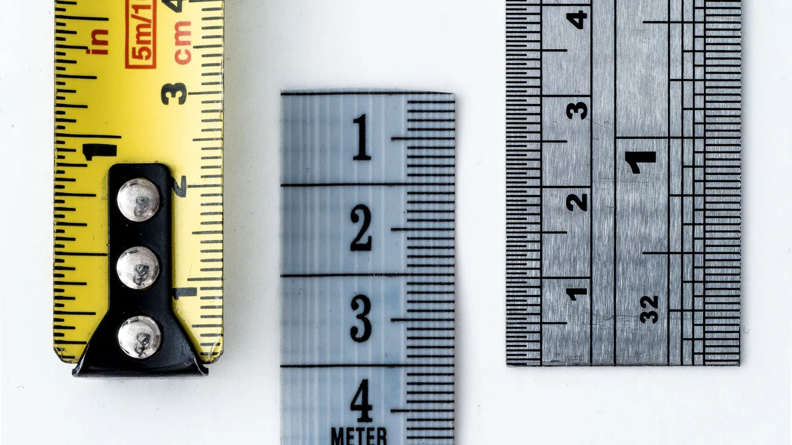

A new framework turns "agentic" from a label into six dials. Once you can see the dials, the buying question changes. You want the lowest setting that still finishes the job.
EY published a short explainer on the six dimensions of AI agents. It proposes measuring how agentic a system is rather than arguing about whether it qualifies for the word at all.
Two dimensions do most of the work. Goal complexity is whether the system handles one narrow task or breaks a tangled objective into steps that depend on each other. Independent execution is how much it does without a person in the path. Four more fill in the picture: generality across domains, adaptability while running, how well it copes with a messy and unpredictable setting, and the scale of what it can affect.
Scored that way, an automated meeting notetaker and a self-driving car stop being the same category of thing. One sits near the floor on every dimension. The other is near the ceiling on most of them.
When a vendor says agentic, you are being quoted a position on six dials without being told which ones. That matters because cost, failure modes and the amount of oversight you owe all track those settings.
Turn up independent execution and you take people out of the path, which is the point, and you also remove the last reader before a mistake reaches a customer. Turn up adaptability and the system that passed your acceptance test in March behaves differently in September, because it has been adjusting. Turn up generality and every extra domain widens the range of things it can get wrong on your behalf. Each dial buys capability and bills you in supervision.
Now look at what a support organisation actually processes. Order status. Password resets. Shipping policy. Whether a coupon applies to a cart. These are one-step questions in a stable setting with a documented answer, sitting close to the floor on every dimension EY names. Paying for high autonomy there means paying for capability you then have to govern.

Six dials only help if something on your side can be set to match them, and that is where a visual builder earns its place. Each dimension has a concrete counterpart in what you assemble.
Goal complexity decides whether you build a single grounded chatbot or a multi-step agentflow. Independent execution decides whether a human approval step sits in the path before anything commits. Generality is the length of the tool list you hand the agent, one connector at a time. Environmental complexity is how much you ground the answer in retrieval over your own documents instead of letting the model recall. Impact is which credentials the thing holds and what those credentials can reach.
Because CX-Builder runs on your own servers, those settings stay yours. They do not shift because a vendor shipped a release that made its assistant more ambitious.
Score the workload on two plain questions before anyone opens a canvas: how many steps does this take, and who gets hurt if the answer is wrong. One step and low stakes gets a retrieval chatbot over your policy documents, no tools and nothing to approve. Real branching with money or account access at the end gets an agentflow with a fixed tool list, a structured output step so a condition can read the proposal, and an approval node in front of the commit.
Give every agent the shortest tool list that works. Each connector you add raises generality, and generality is the dimension that quietly widens what a bad run can reach. Log each run with the tools it called, so when something does go wrong you can tell which dial was set too high rather than guessing at the prompt.
Take your three highest-volume customer workflows and score each one on steps and consequences. Anything that is one step with a documented answer should ship this quarter as a grounded chatbot, not an agent. Spend the autonomy budget on the small number of flows that genuinely branch.